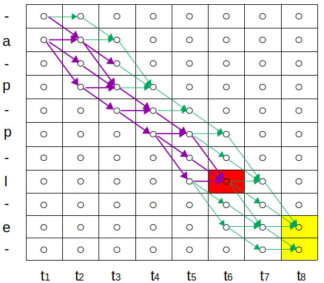
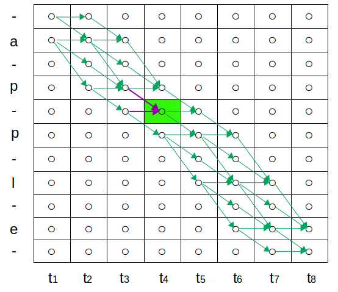
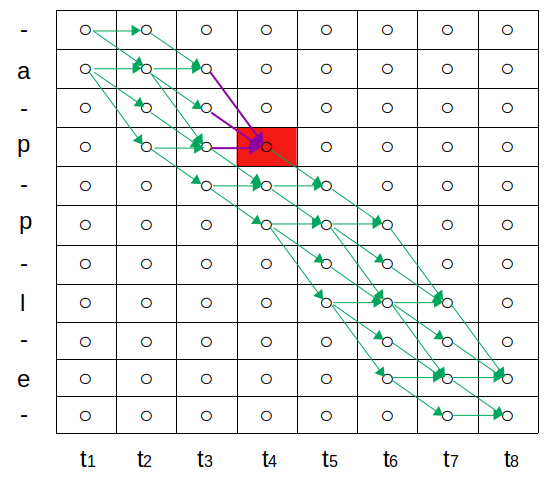
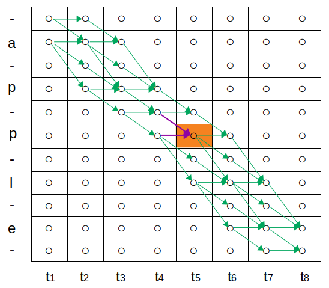
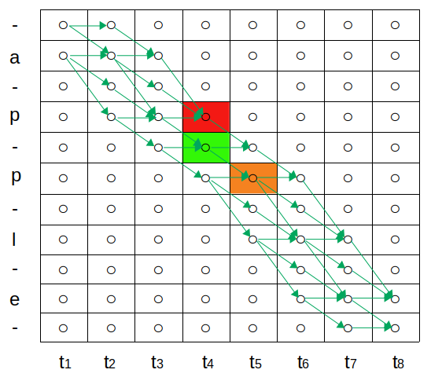
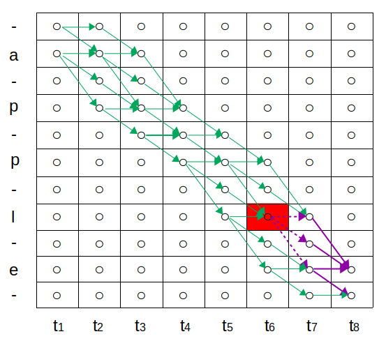
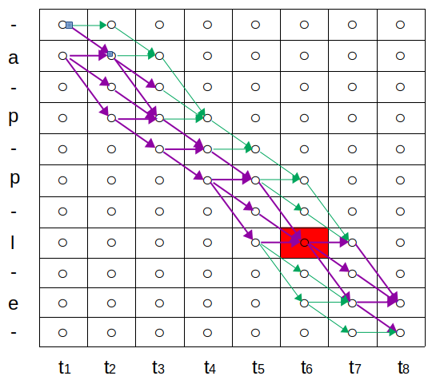
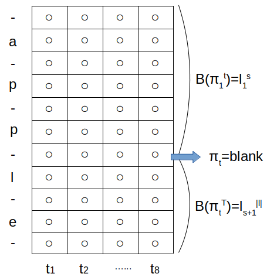
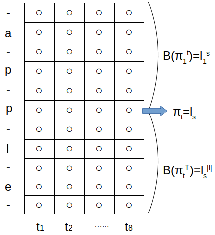

CTC是一种用来训练seq2seq网络的损失函数，它不需要数据和标注的对齐，可用于训练语音识别端到端系统。
这是一篇对CTC公式的详细推导，事实上，CTC的直观理解远没有这么复杂。
定义
- 样本标注字符集: $L \in \mathbb{R}^n$
- 网络输出字符集: $L^{\prime} = L \cup \{blank\}$
- 路径: $\pi \in (L^{\prime})^T$;
- e.g. $(-a a- -a b b -)$, $(a-a b-) $
- 路径到标注的转换规则 $\mathcal{B}$: $(L^{\prime})^{T} \mapsto L^{\leq T}$
- e.g. $\mathcal{B}(a-a b-)=\mathcal{B}(-a a- -a b b)=aab$
训练
训练集 $S = D_{\mathcal{X} \times \mathcal{Z}}$, $\mathcal{X} = (\mathbb{R}^m)^*$, $\mathcal{Z} = L^*$; 对于 $S$ 中的每一个样本 $(\mathbf{x}, \mathbf{z})$:
- $\mathbf{x} = (x_1, x_2, \dots, x_T)$, $x_t \in \mathbb{R}^m$
- $\mathbf{z} = (z_1, z_2, \dots, z_U)$, $z_i \in L$
- $U \le T$
网络 $\mathbf{y} = N_w(\mathbf{x})$: $(\mathbb{R}^{m})^{T} \longmapsto (\mathbb{R}^{n})^{T}$
- $\mathbf{x} = (x_1, x_2, \dots, x_T)$
- $\mathbf{y} = (y_1, y_2, \dots, y_T)$, $y_t^k$ 表示第 $k$ 个字符的在时间 $t$ 的激活(softmax)
损失函数
使用极大似然训练， 损失函数取极大似然的负对数，即:
其中:
我们希望计算损失函数对时间点 $t$ 上的输出激活 $y_k^t$ 的导数。简单地，即求:
CTC使用前向-后向算法高效计算 Eq.(\ref{eq:loss-function-partial})。 事实上, 只需要前向算法即可计算出 $p(\mathbf{z} | \mathbf{x})$ 。
前向变量
动机
对于标注序列 $l$, 其似然为:
由于 $\pi_T$ 的取值只可能是 $blank$ 或 $l_{|l|}$:
其中:
以及:
根据 Eq.(\ref{eq:alpha_t_s_blank_verbose}), 定义前向变量:
根据 Eq.(\ref{eq:alpha_t_s_l_s_verbose}), 定义前向变量:
标注 $l$ 的似然可以写为:
以 $T=8$, $l=apple$ 为例，该动态规划如图所示， $\alpha$计算的是紫色路径的概率:
为什么是这个图？
图中的路径表示了 $\pi$ 在不同时刻的取值，对$\pi$左边的路径取 $\mathcal{B}$ 即可得到 $\mathcal{B}(\pi)$
从理论上，上文的推导可以说明该图的正确性，但这样的解释过于复杂
直观上，要使路径正确，如果当前点是字符，下一时刻可以取<当前字符，空白，下一（不同）字符>; 如果当前点是空白，下一时刻可以取<空白，下一字符>。该图很好地描述了这一过程, 展示了所有可能的正确路径。

红色表示: $\alpha_{t=6}(s=4, l_s)$
黄色表示: 似然 $p(l | \mathbf{x})$
情况 Eq.(\ref{eq:alpha_t_s_blank_short})

情况 Eq.(\ref{eq:alpha_t_s_l_s_short})


简化
进一步，根据图示的信息，可以重写前向公式。对于标注序列 $l$, 定义其扩展 $l^{\prime}$ 为: 在 $l$ 的两侧以及所有字符间插入空白字符。
e.g.
$l=aabcdda$
$l^{\prime}=-a-a-b-c-d-d-a-$
如图通过奇偶简化定义:
进一步简化为同时适用于奇偶两种情况定义的公式:
重写 Eq.(\ref{eq:alpha_t_s_blank_short}) 和 Eq.(\ref{eq:alpha_t_s_l_s_short}):
初值:
似然:
此时, 该动态规划为:

红色表示: $\alpha_{t=4}(s^{\prime}=4)$
绿色表示: $\alpha_{t=4}(s^{\prime}=5)$
绿色和橙色 为 Eq.(\ref{eq:alpha_t_s})的情况1。
红色 为 Eq.(\ref{eq:alpha_t_s})的情况2。
后向变量
类似 Eq.(\ref{eq:alpha_simple_double}), 定以后向变量:
进一步简化为同时适用于奇偶两种情况定义的公式:
$\beta$计算的是紫色路径中，实线部分的概率:

则 $\beta$ 的递推公式为:
初值:
前-后向算法
即只需要考虑在 $t$ 时刻经过字符 $k$ 的所有路径的概率。

在 $t=6$ 处经过字符 $l$ 的所有路径。
字符 $p$ 和 $blank$ 出现多次，需要对每次分别计算后求和。
前-后向算法:
其中$lab(k, l^{\prime})$ 为所有使得 $l_{s^{\prime}}=k$ 的 $s^\prime$。e.g. $lab(p, l^{\prime})=\{4,6\}$。
并用到了如下结论:


反向传播
损失函数对 $softmax$ 的输出 $y_k^t$ 导数为:
输出层输出为 $a_k^t$, 有:
故 $y_{k^{\prime}}^t$ 对 $a_k^t$ 的导数为:
损失函数对输出层的导数为:
解码
best path decoding
prefix search decoding
beam search decoding
受限解码
相关链接
- Kleene star
- [CTC 完整实现]